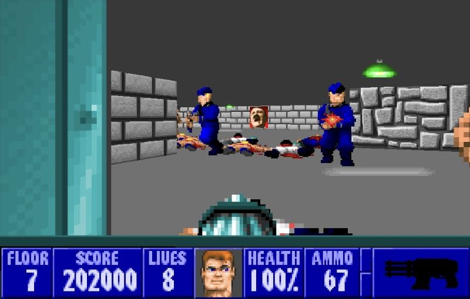
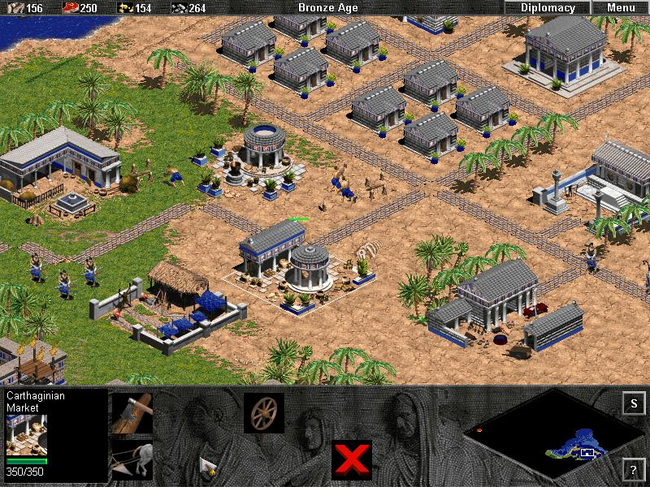

Videojuegos
17 de Agosto, 2025
Inicios
El primer acercamiento a los videojuegos no fue precisamente por el NES, sino por las computadoras. La verdad no estoy muy seguro cual sería el primer videojuego que jugué en toda mi vida. Tal vez fue el "gorillas", en la computadora de Chepo, la que aun ni siquiera tenía monitor a color. Y aunque era muy divertido experimentar con aquellos juegos como el gorilla, nibbles e incluso el Wolfenstein 3D, para mí, no pasaba de ser una mera curiosaidad y no algo que me haya enganchado demasiado.

Me gustaba mucho ver cómo el Pollo jugaba Wolfenstein, y jugar gorillas contra el Chepo. pero fué hasta que probé el NES que me quedé maravillado con los videjuegos. no sé por qué pero los de la computadora no me daban tanto esa sensación mágica y super genial que sí me transmitía el NES. Tal vez porque las computadoras ya eran para mí algo super sorprendente y no esperaba menos de ellas, mientas que el NES fue algo un poco distinto, ya que al conectarlo a la tele y ver los juegos a color, y juegos tan diferentes a los de la computadora, fue grandioso.

Cómo conocí el Age of Empires.
Un fin de semana acompañé a Tavo al bordo, porque me dijo que quería buscar un joystick para su computadora, la Compaq con procesador Pentium III que se acababa de comprar, entonces fui con él y anduvimos entre los puestos de juegos hasta que encontró uno, que además de su disco de controladores, incluía un disco lleno de demos de juegos. No era un disco "oficial", era un CD blanco sin marcas ni etiquetas, y venía en un sobre blanco, de papel. Se notaba que era una compilación de demos hecha por quien sabe quién.
Creo que en aquel entonces yo no tenía quemador de CD's así que no le pude hacer una copia al disco, pero sí me lo prestó para estar probando algunos juegos en la computadora verde que teníamos. Me acuerdo que eran muchas carpetas de juegos, pero me di el tiempo de ir probando uno por uno, todos los juegos que venían ahí.
La mayoría no estaban buenos y otros de plano no los pude probar por la poca potencia de mi computadora, pero me topé con el demo de la expansión "Rise of Rome" del Age of Empires 1. Fue mi primera experiencia con un juego de ese tipo, ni siquiera sabía lo que era estrategia en tiempo real, pero quedé fascinado con la mecánica de controlar una civilización, ya sea por individuos o grupos, reunir recursos, crear tropas y enviarlas a la batalla, me voló la cabeza, era genial, yo no tenía idea de que existían juegos así. Me enganchó desde el primer momento y no lo pude soltar.
Tavo me había prestado el disco desde que compró su joystick el fin de semana, pero eran tantos juegos que estuve probando, que encontré el demo de AoE hasta el lunes o martes, porque me acuerdo que empecé a jugarlo en la mañana, como a las 9 más o menos, y cuando se llegó la hora de bañarme para irme al CCH, me seguí jugando y pensé "ahorita me baño rápido", pasó el rato y pensé: "Bueno ya no me baño, nada más me arreglo y me voy", se llegó la hora de salir y yo no me había alistado pero me valió gorro, seguí jugando. Luego llegó la hora en la que ya debería estar llegando al CCH y pensé "Bueno me salto la primera clase, pero llego a la siguiente". Cuando ya eran como las 3 de la tarde entró Mima a mi cuarto a preguntarme si no iba a ir a la escuela, y le dije que sí, que tenía clase a las 6, lo cual era una verdad a medias, porque, aunque sí tenía clase a las 6, no era la única. Así que ya fue como a las 4:30 p.m. más o menos cuando decidí irme. Con ese sentimiento de culpa de haber perdido todo el día jugando en lugar de ir a la escuela.
Pero a partir de ese día no dejé de jugar el demo hasta que lo terminé, era sólo un mapa, pero sí estaba algo difícil, sobre todo para alguien que apenas empieza a familiarizarse con él, lo bueno es que tenía la opción de guardar la partida para continuar después, porque, según recuerdo, me tomó casi una semana terminarlo. Hasta a Paco le gustó y después lo jugaba un rato también. Las siguientes semanas las dediqué a buscar el juego completo en el bordo, hasta que lo conseguí, y no me le despegué en un buen tiempo. De ahí me pasé al AoE II, a sus expansiones y bueno, lo demás ya es historia.
Pero creo que es uno de los pocos juegos de los que tengo al menos vagos recuerdos, y con algunos detalles, sobre cómo fue que lo conocí y lo comencé a jugar. Mi favorito siempre fue el 2, porque, aunque probé el Mithology y el 3, al estar ya hechos como que de polígonos ya los sentí muy raros y cambiados, sobre todo el 3, no digo que no me haya gustado, pero cambió tanto con respecto al 2 que ya no le entré con las mismas ganas. Me abrumó la cantidad de cosas que le añadieron.

← Volver a Historias